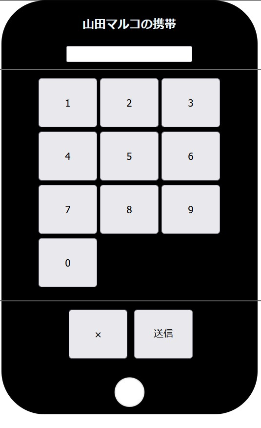

本日はブースに遊びに来てくてくださりありがとうございました。セキュリティという分野に少しでも興味を持っていただけたら幸いです。最後に30秒程度で終わるアンケートのご回答をお願いします。
こちらから

1問目
こんなもんじゃ手ごたえ無いよ、って思われた方もいたかもしれません。すみません。ですが、この問題で言いたかったのは安易なパスワードを設定し、個人情報が漏れてしまえ
ば先ほど体験されたように簡単にパスワードを解除できてしまうよってことです。実際に、スマホのPINコードに誕生日を使っている人は25%に達すると
の調査もあります。また、4桁程度の短いパスワードでは総当たり攻撃などでも簡単に突破されてしまいます。もし、されている方がいるなら変えましょう‼
「総当たり攻撃」・・・暗号の解読やパスワードの割り出しなどに用いられる手法の一つで、割り出したい秘密の情報について、考えられるすべてのパターンをリストアップし、片っ端から検証する方式。
2問目
1問目よりは少し手ごたえがあったかもしれません。ですが、みなさんは最終的にパスワードを解除できたのではないでしょうか。パスワードで
ロックをする以上、どうしても破られる可能性は出てきてしまいます。実際に、悪意のある人はあらゆる手段をつかって解除してくるでしょう。なので、解除されないためにも
多要素認証やスマホなどには生体認証を用いることが望ましいと思います。
「多要素認証」・・・認証の3要素である「知識情報」、「所持情報」、「生体情報」のうち、2つ以上を組み合わせて認証することを指します
3問目
少し難しかったかもしれません。ヒントを見ずに解けた方さすがです!!!!
特に難読化されたコードから答えを見つけ出すところに苦労したと思います。難読化とは、その名の通りコードをわかりにくい形にすることで、読み手に理解
し辛くすることです。メリットとしては、コードの目的の隠ぺいやリバースエンジニアリングの阻止にも役立ちます。
「リバースエンジニアリング」・・・ソフトウェアやハードウェアといったさまざまな製品の構造や仕組みを紐解いて技術情報の調査をし、明らかにすること
本日はブースに遊びに来てくてくださりありがとうございました。セキュリティという分野に少しでも興味を持っていただけたら幸いです。最後に30秒程度で終わるアンケートのご回答をお願いします。
こちらから